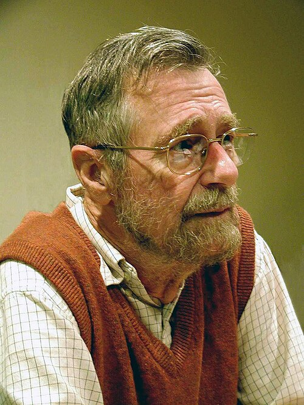

# Lecture 16: Recursion and the Call Stack ## Prove each call makes progress to a base case, and count the frames it keeps **Instructor:** [Dr. Debasish Pattanayak](https://drdebmath.github.io)
## Where Lecture 15 ended · Function calls form a stack - Lecture 15 ended with a hint: function calls form a **call stack**, the last function called returns first. Today uses it to explain recursion. - Lecture 8 introduced recursion with a **base case** and a smaller call (the factorial). We trusted that such a function stops. - **Today's question:** how do we know a recursive function stops, and what do its frames cost? Plan: a worked example, the general form, a termination argument, backtracking, memoization, and the cost of depth.
## Dijkstra and ALGOL 60 · Procedures that call themselves <div class="course-story-layout"> <div> - The ALGOL 60 language allowed a procedure to call itself. - In 1960 Edsger W. Dijkstra (1930–2002), at the Mathematical Centre in Amsterdam, published "Recursive Programming" in *Numerische Mathematik*. - His aim: to call a subroutine "while one or more previous activations of the same subroutine have not yet come to an end". - In August 1960 he and Jaap Zonneveld completed the first ALGOL 60 compiler, for the Electrologica X1 computer. </div> <figure class="course-story-figure"> <p></p> <figcaption>Edsger W. Dijkstra, 2002. Photo: Hamilton Richards, Wikimedia Commons, <a href="https://creativecommons.org/licenses/by-sa/3.0/deed.en">CC BY-SA 3.0</a>.</figcaption> </figure> </div>
## One stack, a new use · Calls wait their turn - Dijkstra's paper: "The basic concept of the method is the so-called *stack*." A "stack pointer" marks the first free place; the unit removed is always the most recently added one. - That is the last-in, first-out order of Bauer's stack in Lecture 15, now used for calls. Each active call keeps its parameters, local variables, and return place in a **stack frame** (activation record). - Today's `printBackward` shows it: the node printed last is the one whose frame was pushed first. **Lesson:** a recursive call is not magic. Each call gets its own frame, and the stack remembers where to resume.
## Print a list backward · The call stack remembers the nodes ~~~cpp void printForward(const Node* p) { if (p == nullptr) return; // base case: empty list std::cout << p->value << ' '; // print before the call printForward(p->next); } void printBackward(const Node* p) { if (p == nullptr) return; // base case: empty list printBackward(p->next); // recursive case: the rest std::cout << p->value << ' '; // print after the call } // main: head = 1 -> 2 -> 3; printForward(head); printBackward(head); then delete the nodes ~~~ ~~~text 1 2 3 3 2 1 ~~~ The only difference is whether the print comes before or after the call. While `printBackward` waits for the rest of the list, its frame holds the node, so the frames on the stack hold the nodes in reverse.
## printBackward step by step · Frames push, then pop <figure class="course-stepper" data-course-stepper> <svg class="course-array-address-figure course-recursion-stack-figure" viewBox="0 0 900 380" role="img" aria-label="A step-by-step trace of printBackward on the list head, 1, 2, 3, nullptr, in 8 frames, with the call stack drawn on the right. Calls: printBackward with p pointing at 1 is pushed, then p at 2, then p at 3, so three frames are waiting. Base case: p is nullptr and that call returns at once. Returns: the nullptr frame is popped and the call for 3 prints 3; it returns and the call for 2 prints 2; it returns and the call for 1 prints 1, giving 3 2 1. Finally the stack is empty. The last call made is the first to finish." xmlns="http://www.w3.org/2000/svg"> <style> .course-recursion-stack-figure text{font-family:ui-monospace,Menlo,Consolas,monospace;fill:currentColor} .course-recursion-stack-figure .cell{fill:none;stroke:currentColor;stroke-width:2} .course-recursion-stack-figure .cell.obj{fill:rgba(142,232,216,.18)} .course-recursion-stack-figure .cell.heap{fill:rgba(255,214,102,.22)} .course-recursion-stack-figure .cell.dead{fill:rgba(255,120,120,.22);stroke-dasharray:6 5} .course-recursion-stack-figure .hl{fill:rgba(110,170,255,.35);stroke:none} .course-recursion-stack-figure .arrow{fill:none;stroke:currentColor;stroke-width:2.5} .course-recursion-stack-figure .head{fill:currentColor} </style> <g class="crs-frame" data-step="0"><text x="20" y="28" font-size="18"><tspan font-weight="700">1 calls</tspan><tspan opacity=".5"> · </tspan><tspan opacity=".5">2 base case</tspan><tspan opacity=".5"> · </tspan><tspan opacity=".5">3 returns</tspan></text><rect class="hl" x="24" y="64" width="132" height="56"/><rect class="cell obj" x="30" y="70" width="50" height="44"/><rect class="cell heap" x="80" y="70" width="70" height="44"/><text x="55" y="100" font-size="22" text-anchor="middle">1</text><text x="115" y="99" font-size="16" text-anchor="middle">next</text><rect class="cell obj" x="200" y="70" width="50" height="44"/><rect class="cell heap" x="250" y="70" width="70" height="44"/><text x="225" y="100" font-size="22" text-anchor="middle">2</text><text x="285" y="99" font-size="16" text-anchor="middle">next</text><rect class="cell obj" x="370" y="70" width="50" height="44"/><rect class="cell heap" x="420" y="70" width="70" height="44"/><text x="395" y="100" font-size="22" text-anchor="middle">3</text><text x="455" y="99" font-size="16" text-anchor="middle">next</text><path class="arrow" d="M150 92 H188"/><polygon class="head" points="200,92 186,85 186,99"/><path class="arrow" d="M320 92 H358"/><polygon class="head" points="370,92 356,85 356,99"/><path class="arrow" d="M490 92 H508"/><polygon class="head" points="522,92 508,85 508,99"/><text x="570" y="98" font-size="16" text-anchor="middle">nullptr</text><text x="760" y="136" font-size="18" text-anchor="middle">call stack</text><rect class="cell heap" x="640" y="264" width="240" height="36"/><text x="760" y="289" font-size="16" text-anchor="middle">printBackward(p → 1)</text><text x="20" y="300" font-size="18">printed: </text><text x="450" y="336" font-size="18" font-weight="700" text-anchor="middle">printBackward(head);</text><text x="450" y="362" font-size="16" text-anchor="middle">First call: p points at node 1, which is not nullptr</text></g> <g class="crs-frame" data-step="1"><text x="20" y="28" font-size="18"><tspan font-weight="700">1 calls</tspan><tspan opacity=".5"> · </tspan><tspan opacity=".5">2 base case</tspan><tspan opacity=".5"> · </tspan><tspan opacity=".5">3 returns</tspan></text><rect class="hl" x="194" y="64" width="132" height="56"/><rect class="cell obj" x="30" y="70" width="50" height="44"/><rect class="cell heap" x="80" y="70" width="70" height="44"/><text x="55" y="100" font-size="22" text-anchor="middle">1</text><text x="115" y="99" font-size="16" text-anchor="middle">next</text><rect class="cell obj" x="200" y="70" width="50" height="44"/><rect class="cell heap" x="250" y="70" width="70" height="44"/><text x="225" y="100" font-size="22" text-anchor="middle">2</text><text x="285" y="99" font-size="16" text-anchor="middle">next</text><rect class="cell obj" x="370" y="70" width="50" height="44"/><rect class="cell heap" x="420" y="70" width="70" height="44"/><text x="395" y="100" font-size="22" text-anchor="middle">3</text><text x="455" y="99" font-size="16" text-anchor="middle">next</text><path class="arrow" d="M150 92 H188"/><polygon class="head" points="200,92 186,85 186,99"/><path class="arrow" d="M320 92 H358"/><polygon class="head" points="370,92 356,85 356,99"/><path class="arrow" d="M490 92 H508"/><polygon class="head" points="522,92 508,85 508,99"/><text x="570" y="98" font-size="16" text-anchor="middle">nullptr</text><text x="760" y="136" font-size="18" text-anchor="middle">call stack</text><rect class="cell obj" x="640" y="264" width="240" height="36"/><text x="760" y="289" font-size="16" text-anchor="middle">printBackward(p → 1)</text><rect class="cell heap" x="640" y="224" width="240" height="36"/><text x="760" y="249" font-size="16" text-anchor="middle">printBackward(p → 2)</text><text x="20" y="300" font-size="18">printed: </text><text x="450" y="336" font-size="18" font-weight="700" text-anchor="middle">printBackward(p->next);</text><text x="450" y="362" font-size="16" text-anchor="middle">Node 1 calls itself with p->next; frame 1 waits</text></g> <g class="crs-frame" data-step="2"><text x="20" y="28" font-size="18"><tspan font-weight="700">1 calls</tspan><tspan opacity=".5"> · </tspan><tspan opacity=".5">2 base case</tspan><tspan opacity=".5"> · </tspan><tspan opacity=".5">3 returns</tspan></text><rect class="hl" x="364" y="64" width="132" height="56"/><rect class="cell obj" x="30" y="70" width="50" height="44"/><rect class="cell heap" x="80" y="70" width="70" height="44"/><text x="55" y="100" font-size="22" text-anchor="middle">1</text><text x="115" y="99" font-size="16" text-anchor="middle">next</text><rect class="cell obj" x="200" y="70" width="50" height="44"/><rect class="cell heap" x="250" y="70" width="70" height="44"/><text x="225" y="100" font-size="22" text-anchor="middle">2</text><text x="285" y="99" font-size="16" text-anchor="middle">next</text><rect class="cell obj" x="370" y="70" width="50" height="44"/><rect class="cell heap" x="420" y="70" width="70" height="44"/><text x="395" y="100" font-size="22" text-anchor="middle">3</text><text x="455" y="99" font-size="16" text-anchor="middle">next</text><path class="arrow" d="M150 92 H188"/><polygon class="head" points="200,92 186,85 186,99"/><path class="arrow" d="M320 92 H358"/><polygon class="head" points="370,92 356,85 356,99"/><path class="arrow" d="M490 92 H508"/><polygon class="head" points="522,92 508,85 508,99"/><text x="570" y="98" font-size="16" text-anchor="middle">nullptr</text><text x="760" y="136" font-size="18" text-anchor="middle">call stack</text><rect class="cell obj" x="640" y="264" width="240" height="36"/><text x="760" y="289" font-size="16" text-anchor="middle">printBackward(p → 1)</text><rect class="cell obj" x="640" y="224" width="240" height="36"/><text x="760" y="249" font-size="16" text-anchor="middle">printBackward(p → 2)</text><rect class="cell heap" x="640" y="184" width="240" height="36"/><text x="760" y="209" font-size="16" text-anchor="middle">printBackward(p → 3)</text><text x="20" y="300" font-size="18">printed: </text><text x="450" y="336" font-size="18" font-weight="700" text-anchor="middle">printBackward(p->next);</text><text x="450" y="362" font-size="16" text-anchor="middle">Node 2 calls itself with p->next; frames 1 and 2 wait</text></g> <g class="crs-frame" data-step="3"><text x="20" y="28" font-size="18"><tspan opacity=".5">1 calls</tspan><tspan opacity=".5"> · </tspan><tspan font-weight="700">2 base case</tspan><tspan opacity=".5"> · </tspan><tspan opacity=".5">3 returns</tspan></text><rect class="hl" x="524" y="64" width="96" height="56"/><rect class="cell obj" x="30" y="70" width="50" height="44"/><rect class="cell heap" x="80" y="70" width="70" height="44"/><text x="55" y="100" font-size="22" text-anchor="middle">1</text><text x="115" y="99" font-size="16" text-anchor="middle">next</text><rect class="cell obj" x="200" y="70" width="50" height="44"/><rect class="cell heap" x="250" y="70" width="70" height="44"/><text x="225" y="100" font-size="22" text-anchor="middle">2</text><text x="285" y="99" font-size="16" text-anchor="middle">next</text><rect class="cell obj" x="370" y="70" width="50" height="44"/><rect class="cell heap" x="420" y="70" width="70" height="44"/><text x="395" y="100" font-size="22" text-anchor="middle">3</text><text x="455" y="99" font-size="16" text-anchor="middle">next</text><path class="arrow" d="M150 92 H188"/><polygon class="head" points="200,92 186,85 186,99"/><path class="arrow" d="M320 92 H358"/><polygon class="head" points="370,92 356,85 356,99"/><path class="arrow" d="M490 92 H508"/><polygon class="head" points="522,92 508,85 508,99"/><text x="570" y="98" font-size="16" text-anchor="middle">nullptr</text><text x="760" y="136" font-size="18" text-anchor="middle">call stack</text><rect class="cell obj" x="640" y="264" width="240" height="36"/><text x="760" y="289" font-size="16" text-anchor="middle">printBackward(p → 1)</text><rect class="cell obj" x="640" y="224" width="240" height="36"/><text x="760" y="249" font-size="16" text-anchor="middle">printBackward(p → 2)</text><rect class="cell obj" x="640" y="184" width="240" height="36"/><text x="760" y="209" font-size="16" text-anchor="middle">printBackward(p → 3)</text><rect class="cell heap" x="640" y="144" width="240" height="36"/><text x="760" y="169" font-size="16" text-anchor="middle">printBackward(p = nullptr)</text><text x="20" y="300" font-size="18">printed: </text><text x="450" y="336" font-size="18" font-weight="700" text-anchor="middle">if (p == nullptr) return;</text><text x="450" y="362" font-size="16" text-anchor="middle">Base case: p is nullptr, so this call returns at once</text></g> <g class="crs-frame" data-step="4"><text x="20" y="28" font-size="18"><tspan opacity=".5">1 calls</tspan><tspan opacity=".5"> · </tspan><tspan opacity=".5">2 base case</tspan><tspan opacity=".5"> · </tspan><tspan font-weight="700">3 returns</tspan></text><rect class="hl" x="364" y="64" width="132" height="56"/><rect class="cell obj" x="30" y="70" width="50" height="44"/><rect class="cell heap" x="80" y="70" width="70" height="44"/><text x="55" y="100" font-size="22" text-anchor="middle">1</text><text x="115" y="99" font-size="16" text-anchor="middle">next</text><rect class="cell obj" x="200" y="70" width="50" height="44"/><rect class="cell heap" x="250" y="70" width="70" height="44"/><text x="225" y="100" font-size="22" text-anchor="middle">2</text><text x="285" y="99" font-size="16" text-anchor="middle">next</text><rect class="cell obj" x="370" y="70" width="50" height="44"/><rect class="cell heap" x="420" y="70" width="70" height="44"/><text x="395" y="100" font-size="22" text-anchor="middle">3</text><text x="455" y="99" font-size="16" text-anchor="middle">next</text><path class="arrow" d="M150 92 H188"/><polygon class="head" points="200,92 186,85 186,99"/><path class="arrow" d="M320 92 H358"/><polygon class="head" points="370,92 356,85 356,99"/><path class="arrow" d="M490 92 H508"/><polygon class="head" points="522,92 508,85 508,99"/><text x="570" y="98" font-size="16" text-anchor="middle">nullptr</text><text x="760" y="136" font-size="18" text-anchor="middle">call stack</text><rect class="cell obj" x="640" y="264" width="240" height="36"/><text x="760" y="289" font-size="16" text-anchor="middle">printBackward(p → 1)</text><rect class="cell obj" x="640" y="224" width="240" height="36"/><text x="760" y="249" font-size="16" text-anchor="middle">printBackward(p → 2)</text><rect class="cell heap" x="640" y="184" width="240" height="36"/><text x="760" y="209" font-size="16" text-anchor="middle">printBackward(p → 3)</text><rect class="cell dead" x="640" y="144" width="240" height="36"/><text x="760" y="169" font-size="16" text-anchor="middle" class="dim" opacity=".65">(p = nullptr) returned</text><text x="20" y="300" font-size="18">printed: 3</text><text x="450" y="336" font-size="18" font-weight="700" text-anchor="middle">std::cout << p->value << ' ';</text><text x="450" y="362" font-size="16" text-anchor="middle">The nullptr frame is popped; back in p → 3, print 3</text></g> <g class="crs-frame" data-step="5"><text x="20" y="28" font-size="18"><tspan opacity=".5">1 calls</tspan><tspan opacity=".5"> · </tspan><tspan opacity=".5">2 base case</tspan><tspan opacity=".5"> · </tspan><tspan font-weight="700">3 returns</tspan></text><rect class="hl" x="194" y="64" width="132" height="56"/><rect class="cell obj" x="30" y="70" width="50" height="44"/><rect class="cell heap" x="80" y="70" width="70" height="44"/><text x="55" y="100" font-size="22" text-anchor="middle">1</text><text x="115" y="99" font-size="16" text-anchor="middle">next</text><rect class="cell obj" x="200" y="70" width="50" height="44"/><rect class="cell heap" x="250" y="70" width="70" height="44"/><text x="225" y="100" font-size="22" text-anchor="middle">2</text><text x="285" y="99" font-size="16" text-anchor="middle">next</text><rect class="cell obj" x="370" y="70" width="50" height="44"/><rect class="cell heap" x="420" y="70" width="70" height="44"/><text x="395" y="100" font-size="22" text-anchor="middle">3</text><text x="455" y="99" font-size="16" text-anchor="middle">next</text><path class="arrow" d="M150 92 H188"/><polygon class="head" points="200,92 186,85 186,99"/><path class="arrow" d="M320 92 H358"/><polygon class="head" points="370,92 356,85 356,99"/><path class="arrow" d="M490 92 H508"/><polygon class="head" points="522,92 508,85 508,99"/><text x="570" y="98" font-size="16" text-anchor="middle">nullptr</text><text x="760" y="136" font-size="18" text-anchor="middle">call stack</text><rect class="cell obj" x="640" y="264" width="240" height="36"/><text x="760" y="289" font-size="16" text-anchor="middle">printBackward(p → 1)</text><rect class="cell heap" x="640" y="224" width="240" height="36"/><text x="760" y="249" font-size="16" text-anchor="middle">printBackward(p → 2)</text><rect class="cell dead" x="640" y="184" width="240" height="36"/><text x="760" y="209" font-size="16" text-anchor="middle" class="dim" opacity=".65">(p → 3) returned</text><text x="20" y="300" font-size="18">printed: 3 2</text><text x="450" y="336" font-size="18" font-weight="700" text-anchor="middle">std::cout << p->value << ' ';</text><text x="450" y="362" font-size="16" text-anchor="middle">The p → 3 call returns; back in p → 2, print 2</text></g> <g class="crs-frame" data-step="6"><text x="20" y="28" font-size="18"><tspan opacity=".5">1 calls</tspan><tspan opacity=".5"> · </tspan><tspan opacity=".5">2 base case</tspan><tspan opacity=".5"> · </tspan><tspan font-weight="700">3 returns</tspan></text><rect class="hl" x="24" y="64" width="132" height="56"/><rect class="cell obj" x="30" y="70" width="50" height="44"/><rect class="cell heap" x="80" y="70" width="70" height="44"/><text x="55" y="100" font-size="22" text-anchor="middle">1</text><text x="115" y="99" font-size="16" text-anchor="middle">next</text><rect class="cell obj" x="200" y="70" width="50" height="44"/><rect class="cell heap" x="250" y="70" width="70" height="44"/><text x="225" y="100" font-size="22" text-anchor="middle">2</text><text x="285" y="99" font-size="16" text-anchor="middle">next</text><rect class="cell obj" x="370" y="70" width="50" height="44"/><rect class="cell heap" x="420" y="70" width="70" height="44"/><text x="395" y="100" font-size="22" text-anchor="middle">3</text><text x="455" y="99" font-size="16" text-anchor="middle">next</text><path class="arrow" d="M150 92 H188"/><polygon class="head" points="200,92 186,85 186,99"/><path class="arrow" d="M320 92 H358"/><polygon class="head" points="370,92 356,85 356,99"/><path class="arrow" d="M490 92 H508"/><polygon class="head" points="522,92 508,85 508,99"/><text x="570" y="98" font-size="16" text-anchor="middle">nullptr</text><text x="760" y="136" font-size="18" text-anchor="middle">call stack</text><rect class="cell heap" x="640" y="264" width="240" height="36"/><text x="760" y="289" font-size="16" text-anchor="middle">printBackward(p → 1)</text><rect class="cell dead" x="640" y="224" width="240" height="36"/><text x="760" y="249" font-size="16" text-anchor="middle" class="dim" opacity=".65">(p → 2) returned</text><text x="20" y="300" font-size="18">printed: 3 2 1</text><text x="450" y="336" font-size="18" font-weight="700" text-anchor="middle">std::cout << p->value << ' ';</text><text x="450" y="362" font-size="16" text-anchor="middle">The p → 2 call returns; back in p → 1, print 1</text></g> <g class="crs-frame" data-step="7"><text x="20" y="28" font-size="18"><tspan opacity=".5">1 calls</tspan><tspan opacity=".5"> · </tspan><tspan opacity=".5">2 base case</tspan><tspan opacity=".5"> · </tspan><tspan font-weight="700">3 returns</tspan></text><rect class="cell obj" x="30" y="70" width="50" height="44"/><rect class="cell heap" x="80" y="70" width="70" height="44"/><text x="55" y="100" font-size="22" text-anchor="middle">1</text><text x="115" y="99" font-size="16" text-anchor="middle">next</text><rect class="cell obj" x="200" y="70" width="50" height="44"/><rect class="cell heap" x="250" y="70" width="70" height="44"/><text x="225" y="100" font-size="22" text-anchor="middle">2</text><text x="285" y="99" font-size="16" text-anchor="middle">next</text><rect class="cell obj" x="370" y="70" width="50" height="44"/><rect class="cell heap" x="420" y="70" width="70" height="44"/><text x="395" y="100" font-size="22" text-anchor="middle">3</text><text x="455" y="99" font-size="16" text-anchor="middle">next</text><path class="arrow" d="M150 92 H188"/><polygon class="head" points="200,92 186,85 186,99"/><path class="arrow" d="M320 92 H358"/><polygon class="head" points="370,92 356,85 356,99"/><path class="arrow" d="M490 92 H508"/><polygon class="head" points="522,92 508,85 508,99"/><text x="570" y="98" font-size="16" text-anchor="middle">nullptr</text><text x="760" y="136" font-size="18" text-anchor="middle">call stack</text><text x="760" y="280" font-size="16" text-anchor="middle">stack empty</text><text x="20" y="300" font-size="18">printed: 3 2 1</text><text x="450" y="336" font-size="18" font-weight="700" text-anchor="middle">return;</text><text x="450" y="362" font-size="16" text-anchor="middle">The first call returns: the stack is empty and the list printed backward</text></g> </svg> </figure> - Each call to `printBackward` pushes a frame; the call with `nullptr` is the base case and returns first. - Each frame then pops in reverse order, and prints the node it kept.
## Recursive function: the general form ~~~cpp ReturnType solve(Problem p) { if (p is a smallest case) return direct answer; // base case ... solve(smaller p) // recursive case: smaller input ... // combine the results } ~~~ | Part | Meaning | | --- | --- | | Base case | A smallest input answered directly, with no recursive call. | | Recursive case | Calls the function on a smaller input of the same kind. | | Progress measure | A non-negative quantity that strictly decreases on every call: `n`, the list length, `hi - lo`. | | Combine step | Uses the result of the smaller call to build the answer: add, attach, print after. | | Pre-condition | What the caller must guarantee, for example `n >= 0`. Check it with `assert` (Lecture 12). | A recursive function stops when every call shrinks the measure and the measure cannot go below the base case.
## Prove termination · A measure that shrinks to the base case ~~~cpp void printBinary(int n) { assert(n >= 0); // pre-condition (Lecture 12) if (n >= 2) printBinary(n / 2); // measure n halves: reaches 0 or 1 std::cout << n % 2; } // main: printBinary(6); printBinary(13); ~~~ ~~~text 110 1101 ~~~ The measure is `n`: each call passes `n / 2`, which is smaller and still non-negative, so the calls reach 0 or 1, the base case. Printing after the call writes the highest bit first. An error to avoid: ~~~cpp int countDown(int n) { if (n == 0) return 0; // base case return countDown(n - 2); // progress skips the base case when n is odd } ~~~ `countDown(5)` calls with 5, 3, 1, -1, -3, and never reaches 0. The calls never stop: in practice the frames fill the stack and the program crashes with a stack overflow.
## Reverse a list recursively · Reverse the rest, then attach the head ~~~cpp Node* reverse(Node* head) { if (head == nullptr || head->next == nullptr) return head; // 0 or 1 node Node* newHead = reverse(head->next); // reverse the rest head->next->next = head; // the old second node now points back head->next = nullptr; // head becomes the last node return newHead; } // main: list 1 2 3 4; print; head = reverse(head); print ~~~ ~~~text 1 2 3 4 4 3 2 1 ~~~ <figure class="course-stepper" data-course-stepper> <svg class="course-array-address-figure course-reverse-anim-figure" viewBox="0 0 900 400" role="img" aria-label="A step-by-step trace of recursive linked-list reversal on 1, 2, 3, 4, nullptr in 11 frames. The four nodes stay in place and only the next pointers move. Calls: reverse(1), reverse(2), reverse(3) and reverse(4) are pushed on the call stack with head pointing at each node in turn. Base case: 4's next is nullptr, so reverse(4) returns node 4 and newHead points at 4. Rewire: in reverse(3), head next next = head makes 4 point back at 3, then head next = nullptr makes 3 point at nullptr; reverse(2) makes 3 point at 2 and 2 at nullptr; reverse(1) makes 2 point at 1 and 1 at nullptr. Finally head in main points at 4 and the list reads 4, 3, 2, 1, nullptr." xmlns="http://www.w3.org/2000/svg"> <style> .course-reverse-anim-figure text{font-family:ui-monospace,Menlo,Consolas,monospace;fill:currentColor} .course-reverse-anim-figure .cell{fill:none;stroke:currentColor;stroke-width:2} .course-reverse-anim-figure .cell.obj{fill:rgba(142,232,216,.18)} .course-reverse-anim-figure .cell.heap{fill:rgba(255,214,102,.22)} .course-reverse-anim-figure .cell.dead{fill:rgba(255,120,120,.22);stroke-dasharray:6 5} .course-reverse-anim-figure .hl{fill:rgba(110,170,255,.35);stroke:none} .course-reverse-anim-figure .arrow{fill:none;stroke:currentColor;stroke-width:2.5} .course-reverse-anim-figure .arrow.cra-new{stroke-width:4.5} .course-reverse-anim-figure .cra-glow{fill:none;stroke:rgba(255,160,50,.5);stroke-width:16;stroke-linecap:round} .course-reverse-anim-figure .head{fill:currentColor} </style> <g data-step="0"><text x="20" y="28" font-size="18"><tspan font-weight="700">1 calls</tspan><tspan opacity=".5"> · </tspan><tspan opacity=".5">2 base case</tspan><tspan opacity=".5"> · </tspan><tspan opacity=".5">3 rewire</tspan></text><rect class="hl" x="18" y="134" width="112" height="56"/><rect class="cell obj" x="24" y="140" width="44" height="44"/><rect class="cell heap" x="68" y="140" width="56" height="44"/><text x="46" y="169" font-size="22" text-anchor="middle">1</text><text x="96" y="168" font-size="16" text-anchor="middle">next</text><rect class="cell obj" x="164" y="140" width="44" height="44"/><rect class="cell heap" x="208" y="140" width="56" height="44"/><text x="186" y="169" font-size="22" text-anchor="middle">2</text><text x="236" y="168" font-size="16" text-anchor="middle">next</text><rect class="cell obj" x="304" y="140" width="44" height="44"/><rect class="cell heap" x="348" y="140" width="56" height="44"/><text x="326" y="169" font-size="22" text-anchor="middle">3</text><text x="376" y="168" font-size="16" text-anchor="middle">next</text><rect class="cell obj" x="444" y="140" width="44" height="44"/><rect class="cell heap" x="488" y="140" width="56" height="44"/><text x="466" y="169" font-size="22" text-anchor="middle">4</text><text x="516" y="168" font-size="16" text-anchor="middle">next</text><path class="arrow" d="M124 162 H150"/><polygon class="head" points="164,162 150,155 150,169"/><path class="arrow" d="M264 162 H290"/><polygon class="head" points="304,162 290,155 290,169"/><path class="arrow" d="M404 162 H430"/><polygon class="head" points="444,162 430,155 430,169"/><path class="arrow" d="M516 184 V198"/><path class="arrow" d="M502 200 H530 M507 206 H525 M512 212 H520"/><text x="516" y="233" font-size="15" text-anchor="middle">nullptr</text><rect class="cell obj" x="18" y="92" width="56" height="24" style="stroke-width:3"/><text x="46" y="109" font-size="16" font-weight="700" text-anchor="middle">head</text><path class="arrow" d="M46 116 V128"/><polygon class="head" points="46,140 39,126 53,126"/><text x="775" y="128" font-size="18" text-anchor="middle">call stack</text><rect class="hl" x="664" y="256" width="222" height="48"/><rect class="cell heap" x="670" y="262" width="210" height="36"/><text x="775" y="287" font-size="16" text-anchor="middle">reverse(1)</text><text x="450" y="352" font-size="18" font-weight="700" text-anchor="middle">Node* newHead = reverse(head->next);</text><text x="450" y="380" font-size="16" text-anchor="middle">main calls reverse(1): head points at 1, which has a next node, so recurse</text></g> <g data-step="1"><text x="20" y="28" font-size="18"><tspan font-weight="700">1 calls</tspan><tspan opacity=".5"> · </tspan><tspan opacity=".5">2 base case</tspan><tspan opacity=".5"> · </tspan><tspan opacity=".5">3 rewire</tspan></text><rect class="hl" x="158" y="134" width="112" height="56"/><rect class="cell obj" x="24" y="140" width="44" height="44"/><rect class="cell heap" x="68" y="140" width="56" height="44"/><text x="46" y="169" font-size="22" text-anchor="middle">1</text><text x="96" y="168" font-size="16" text-anchor="middle">next</text><rect class="cell obj" x="164" y="140" width="44" height="44"/><rect class="cell heap" x="208" y="140" width="56" height="44"/><text x="186" y="169" font-size="22" text-anchor="middle">2</text><text x="236" y="168" font-size="16" text-anchor="middle">next</text><rect class="cell obj" x="304" y="140" width="44" height="44"/><rect class="cell heap" x="348" y="140" width="56" height="44"/><text x="326" y="169" font-size="22" text-anchor="middle">3</text><text x="376" y="168" font-size="16" text-anchor="middle">next</text><rect class="cell obj" x="444" y="140" width="44" height="44"/><rect class="cell heap" x="488" y="140" width="56" height="44"/><text x="466" y="169" font-size="22" text-anchor="middle">4</text><text x="516" y="168" font-size="16" text-anchor="middle">next</text><path class="arrow" d="M124 162 H150"/><polygon class="head" points="164,162 150,155 150,169"/><path class="arrow" d="M264 162 H290"/><polygon class="head" points="304,162 290,155 290,169"/><path class="arrow" d="M404 162 H430"/><polygon class="head" points="444,162 430,155 430,169"/><path class="arrow" d="M516 184 V198"/><path class="arrow" d="M502 200 H530 M507 206 H525 M512 212 H520"/><text x="516" y="233" font-size="15" text-anchor="middle">nullptr</text><rect class="cell obj" x="158" y="92" width="56" height="24" style="stroke-width:3"/><text x="186" y="109" font-size="16" font-weight="700" text-anchor="middle">head</text><path class="arrow" d="M186 116 V128"/><polygon class="head" points="186,140 179,126 193,126"/><text x="775" y="128" font-size="18" text-anchor="middle">call stack</text><rect class="cell obj" x="670" y="262" width="210" height="36"/><text x="775" y="287" font-size="16" text-anchor="middle">reverse(1)</text><rect class="hl" x="664" y="216" width="222" height="48"/><rect class="cell heap" x="670" y="222" width="210" height="36"/><text x="775" y="247" font-size="16" text-anchor="middle">reverse(2)</text><text x="450" y="352" font-size="18" font-weight="700" text-anchor="middle">Node* newHead = reverse(head->next);</text><text x="450" y="380" font-size="16" text-anchor="middle">reverse(2) is called: head points at 2, and reverse(1) waits on the stack</text></g> <g data-step="2"><text x="20" y="28" font-size="18"><tspan font-weight="700">1 calls</tspan><tspan opacity=".5"> · </tspan><tspan opacity=".5">2 base case</tspan><tspan opacity=".5"> · </tspan><tspan opacity=".5">3 rewire</tspan></text><rect class="hl" x="298" y="134" width="112" height="56"/><rect class="cell obj" x="24" y="140" width="44" height="44"/><rect class="cell heap" x="68" y="140" width="56" height="44"/><text x="46" y="169" font-size="22" text-anchor="middle">1</text><text x="96" y="168" font-size="16" text-anchor="middle">next</text><rect class="cell obj" x="164" y="140" width="44" height="44"/><rect class="cell heap" x="208" y="140" width="56" height="44"/><text x="186" y="169" font-size="22" text-anchor="middle">2</text><text x="236" y="168" font-size="16" text-anchor="middle">next</text><rect class="cell obj" x="304" y="140" width="44" height="44"/><rect class="cell heap" x="348" y="140" width="56" height="44"/><text x="326" y="169" font-size="22" text-anchor="middle">3</text><text x="376" y="168" font-size="16" text-anchor="middle">next</text><rect class="cell obj" x="444" y="140" width="44" height="44"/><rect class="cell heap" x="488" y="140" width="56" height="44"/><text x="466" y="169" font-size="22" text-anchor="middle">4</text><text x="516" y="168" font-size="16" text-anchor="middle">next</text><path class="arrow" d="M124 162 H150"/><polygon class="head" points="164,162 150,155 150,169"/><path class="arrow" d="M264 162 H290"/><polygon class="head" points="304,162 290,155 290,169"/><path class="arrow" d="M404 162 H430"/><polygon class="head" points="444,162 430,155 430,169"/><path class="arrow" d="M516 184 V198"/><path class="arrow" d="M502 200 H530 M507 206 H525 M512 212 H520"/><text x="516" y="233" font-size="15" text-anchor="middle">nullptr</text><rect class="cell obj" x="298" y="92" width="56" height="24" style="stroke-width:3"/><text x="326" y="109" font-size="16" font-weight="700" text-anchor="middle">head</text><path class="arrow" d="M326 116 V128"/><polygon class="head" points="326,140 319,126 333,126"/><text x="775" y="128" font-size="18" text-anchor="middle">call stack</text><rect class="cell obj" x="670" y="262" width="210" height="36"/><text x="775" y="287" font-size="16" text-anchor="middle">reverse(1)</text><rect class="cell obj" x="670" y="222" width="210" height="36"/><text x="775" y="247" font-size="16" text-anchor="middle">reverse(2)</text><rect class="hl" x="664" y="176" width="222" height="48"/><rect class="cell heap" x="670" y="182" width="210" height="36"/><text x="775" y="207" font-size="16" text-anchor="middle">reverse(3)</text><text x="450" y="352" font-size="18" font-weight="700" text-anchor="middle">Node* newHead = reverse(head->next);</text><text x="450" y="380" font-size="16" text-anchor="middle">reverse(3) is called: head points at 3, and three calls now wait</text></g> <g data-step="3"><text x="20" y="28" font-size="18"><tspan opacity=".5">1 calls</tspan><tspan opacity=".5"> · </tspan><tspan font-weight="700">2 base case</tspan><tspan opacity=".5"> · </tspan><tspan opacity=".5">3 rewire</tspan></text><rect class="hl" x="438" y="134" width="112" height="56"/><rect class="cell obj" x="24" y="140" width="44" height="44"/><rect class="cell heap" x="68" y="140" width="56" height="44"/><text x="46" y="169" font-size="22" text-anchor="middle">1</text><text x="96" y="168" font-size="16" text-anchor="middle">next</text><rect class="cell obj" x="164" y="140" width="44" height="44"/><rect class="cell heap" x="208" y="140" width="56" height="44"/><text x="186" y="169" font-size="22" text-anchor="middle">2</text><text x="236" y="168" font-size="16" text-anchor="middle">next</text><rect class="cell obj" x="304" y="140" width="44" height="44"/><rect class="cell heap" x="348" y="140" width="56" height="44"/><text x="326" y="169" font-size="22" text-anchor="middle">3</text><text x="376" y="168" font-size="16" text-anchor="middle">next</text><rect class="cell obj" x="444" y="140" width="44" height="44"/><rect class="cell heap" x="488" y="140" width="56" height="44"/><text x="466" y="169" font-size="22" text-anchor="middle">4</text><text x="516" y="168" font-size="16" text-anchor="middle">next</text><path class="arrow" d="M124 162 H150"/><polygon class="head" points="164,162 150,155 150,169"/><path class="arrow" d="M264 162 H290"/><polygon class="head" points="304,162 290,155 290,169"/><path class="arrow" d="M404 162 H430"/><polygon class="head" points="444,162 430,155 430,169"/><path class="arrow" d="M516 184 V198"/><path class="arrow" d="M502 200 H530 M507 206 H525 M512 212 H520"/><text x="516" y="233" font-size="15" text-anchor="middle">nullptr</text><rect class="cell obj" x="438" y="92" width="56" height="24" style="stroke-width:3"/><text x="466" y="109" font-size="16" font-weight="700" text-anchor="middle">head</text><path class="arrow" d="M466 116 V128"/><polygon class="head" points="466,140 459,126 473,126"/><rect class="cell heap" x="500" y="92" width="92" height="24"/><text x="546" y="109" font-size="16" text-anchor="middle">newHead</text><path class="arrow" d="M530 116 L519 128"/><polygon class="head" points="516,140 511,127 525,125"/><text x="775" y="128" font-size="18" text-anchor="middle">call stack</text><rect class="cell obj" x="670" y="262" width="210" height="36"/><text x="775" y="287" font-size="16" text-anchor="middle">reverse(1)</text><rect class="cell obj" x="670" y="222" width="210" height="36"/><text x="775" y="247" font-size="16" text-anchor="middle">reverse(2)</text><rect class="cell obj" x="670" y="182" width="210" height="36"/><text x="775" y="207" font-size="16" text-anchor="middle">reverse(3)</text><rect class="hl" x="664" y="136" width="222" height="48"/><rect class="cell heap" x="670" y="142" width="210" height="36"/><text x="775" y="167" font-size="16" text-anchor="middle">reverse(4)</text><text x="450" y="352" font-size="18" font-weight="700" text-anchor="middle">if (head == nullptr || head->next == nullptr) return head;</text><text x="450" y="380" font-size="16" text-anchor="middle">Base case: 4->next is nullptr, so reverse(4) returns node 4 and newHead points at 4</text></g> <g data-step="4"><text x="20" y="28" font-size="18"><tspan opacity=".5">1 calls</tspan><tspan opacity=".5"> · </tspan><tspan opacity=".5">2 base case</tspan><tspan opacity=".5"> · </tspan><tspan font-weight="700">3 rewire</tspan></text><rect class="hl" x="298" y="134" width="112" height="56"/><rect class="cell obj" x="24" y="140" width="44" height="44"/><rect class="cell heap" x="68" y="140" width="56" height="44"/><text x="46" y="169" font-size="22" text-anchor="middle">1</text><text x="96" y="168" font-size="16" text-anchor="middle">next</text><rect class="cell obj" x="164" y="140" width="44" height="44"/><rect class="cell heap" x="208" y="140" width="56" height="44"/><text x="186" y="169" font-size="22" text-anchor="middle">2</text><text x="236" y="168" font-size="16" text-anchor="middle">next</text><rect class="cell obj" x="304" y="140" width="44" height="44"/><rect class="cell heap" x="348" y="140" width="56" height="44"/><text x="326" y="169" font-size="22" text-anchor="middle">3</text><text x="376" y="168" font-size="16" text-anchor="middle">next</text><rect class="cell obj" x="444" y="140" width="44" height="44"/><rect class="cell heap" x="488" y="140" width="56" height="44"/><text x="466" y="169" font-size="22" text-anchor="middle">4</text><text x="516" y="168" font-size="16" text-anchor="middle">next</text><path class="arrow" d="M124 162 H150"/><polygon class="head" points="164,162 150,155 150,169"/><path class="arrow" d="M264 162 H290"/><polygon class="head" points="304,162 290,155 290,169"/><path class="arrow" d="M404 162 H430"/><polygon class="head" points="444,162 430,155 430,169"/><path class="cra-glow" d="M516 184 C516 320 326 320 326 200"/><path class="arrow cra-new" d="M516 184 C516 320 326 320 326 200"/><polygon class="head" points="326,186 319,200 333,200"/><rect class="cell obj" x="298" y="92" width="56" height="24" style="stroke-width:3"/><text x="326" y="109" font-size="16" font-weight="700" text-anchor="middle">head</text><path class="arrow" d="M326 116 V128"/><polygon class="head" points="326,140 319,126 333,126"/><rect class="cell heap" x="500" y="92" width="92" height="24"/><text x="546" y="109" font-size="16" text-anchor="middle">newHead</text><path class="arrow" d="M530 116 L519 128"/><polygon class="head" points="516,140 511,127 525,125"/><text x="775" y="128" font-size="18" text-anchor="middle">call stack</text><rect class="cell obj" x="670" y="262" width="210" height="36"/><text x="775" y="287" font-size="16" text-anchor="middle">reverse(1)</text><rect class="cell obj" x="670" y="222" width="210" height="36"/><text x="775" y="247" font-size="16" text-anchor="middle">reverse(2)</text><rect class="hl" x="664" y="176" width="222" height="48"/><rect class="cell heap" x="670" y="182" width="210" height="36"/><text x="775" y="207" font-size="16" text-anchor="middle">reverse(3)</text><text x="450" y="352" font-size="18" font-weight="700" text-anchor="middle">head->next->next = head;</text><text x="450" y="380" font-size="16" text-anchor="middle">reverse(3): 4's next now points back at 3, while 3 still points at 4 (a 2-cycle)</text></g> <g data-step="5"><text x="20" y="28" font-size="18"><tspan opacity=".5">1 calls</tspan><tspan opacity=".5"> · </tspan><tspan opacity=".5">2 base case</tspan><tspan opacity=".5"> · </tspan><tspan font-weight="700">3 rewire</tspan></text><rect class="hl" x="298" y="134" width="112" height="56"/><rect class="cell obj" x="24" y="140" width="44" height="44"/><rect class="cell heap" x="68" y="140" width="56" height="44"/><text x="46" y="169" font-size="22" text-anchor="middle">1</text><text x="96" y="168" font-size="16" text-anchor="middle">next</text><rect class="cell obj" x="164" y="140" width="44" height="44"/><rect class="cell heap" x="208" y="140" width="56" height="44"/><text x="186" y="169" font-size="22" text-anchor="middle">2</text><text x="236" y="168" font-size="16" text-anchor="middle">next</text><rect class="cell obj" x="304" y="140" width="44" height="44"/><rect class="cell heap" x="348" y="140" width="56" height="44"/><text x="326" y="169" font-size="22" text-anchor="middle">3</text><text x="376" y="168" font-size="16" text-anchor="middle">next</text><rect class="cell obj" x="444" y="140" width="44" height="44"/><rect class="cell heap" x="488" y="140" width="56" height="44"/><text x="466" y="169" font-size="22" text-anchor="middle">4</text><text x="516" y="168" font-size="16" text-anchor="middle">next</text><path class="arrow" d="M124 162 H150"/><polygon class="head" points="164,162 150,155 150,169"/><path class="arrow" d="M264 162 H290"/><polygon class="head" points="304,162 290,155 290,169"/><path class="cra-glow" d="M376 184 V212"/><path class="cra-glow" d="M376 184 V198"/><path class="arrow cra-new" d="M376 184 V198"/><path class="arrow" d="M362 200 H390 M367 206 H385 M372 212 H380"/><text x="376" y="233" font-size="15" text-anchor="middle">nullptr</text><path class="arrow" d="M516 184 C516 320 326 320 326 200"/><polygon class="head" points="326,186 319,200 333,200"/><rect class="cell obj" x="298" y="92" width="56" height="24" style="stroke-width:3"/><text x="326" y="109" font-size="16" font-weight="700" text-anchor="middle">head</text><path class="arrow" d="M326 116 V128"/><polygon class="head" points="326,140 319,126 333,126"/><rect class="cell heap" x="500" y="92" width="92" height="24"/><text x="546" y="109" font-size="16" text-anchor="middle">newHead</text><path class="arrow" d="M530 116 L519 128"/><polygon class="head" points="516,140 511,127 525,125"/><text x="775" y="128" font-size="18" text-anchor="middle">call stack</text><rect class="cell obj" x="670" y="262" width="210" height="36"/><text x="775" y="287" font-size="16" text-anchor="middle">reverse(1)</text><rect class="cell obj" x="670" y="222" width="210" height="36"/><text x="775" y="247" font-size="16" text-anchor="middle">reverse(2)</text><rect class="hl" x="664" y="176" width="222" height="48"/><rect class="cell heap" x="670" y="182" width="210" height="36"/><text x="775" y="207" font-size="16" text-anchor="middle">reverse(3)</text><text x="450" y="352" font-size="18" font-weight="700" text-anchor="middle">head->next = nullptr;</text><text x="450" y="380" font-size="16" text-anchor="middle">3's next becomes nullptr, which breaks the 2-cycle; reverse(3) returns newHead (node 4)</text></g> <g data-step="6"><text x="20" y="28" font-size="18"><tspan opacity=".5">1 calls</tspan><tspan opacity=".5"> · </tspan><tspan opacity=".5">2 base case</tspan><tspan opacity=".5"> · </tspan><tspan font-weight="700">3 rewire</tspan></text><rect class="hl" x="158" y="134" width="112" height="56"/><rect class="cell obj" x="24" y="140" width="44" height="44"/><rect class="cell heap" x="68" y="140" width="56" height="44"/><text x="46" y="169" font-size="22" text-anchor="middle">1</text><text x="96" y="168" font-size="16" text-anchor="middle">next</text><rect class="cell obj" x="164" y="140" width="44" height="44"/><rect class="cell heap" x="208" y="140" width="56" height="44"/><text x="186" y="169" font-size="22" text-anchor="middle">2</text><text x="236" y="168" font-size="16" text-anchor="middle">next</text><rect class="cell obj" x="304" y="140" width="44" height="44"/><rect class="cell heap" x="348" y="140" width="56" height="44"/><text x="326" y="169" font-size="22" text-anchor="middle">3</text><text x="376" y="168" font-size="16" text-anchor="middle">next</text><rect class="cell obj" x="444" y="140" width="44" height="44"/><rect class="cell heap" x="488" y="140" width="56" height="44"/><text x="466" y="169" font-size="22" text-anchor="middle">4</text><text x="516" y="168" font-size="16" text-anchor="middle">next</text><path class="arrow" d="M124 162 H150"/><polygon class="head" points="164,162 150,155 150,169"/><path class="arrow" d="M264 162 H290"/><polygon class="head" points="304,162 290,155 290,169"/><path class="cra-glow" d="M376 184 C376 320 186 320 186 200"/><path class="arrow cra-new" d="M376 184 C376 320 186 320 186 200"/><polygon class="head" points="186,186 179,200 193,200"/><path class="arrow" d="M516 184 C516 320 326 320 326 200"/><polygon class="head" points="326,186 319,200 333,200"/><rect class="cell obj" x="158" y="92" width="56" height="24" style="stroke-width:3"/><text x="186" y="109" font-size="16" font-weight="700" text-anchor="middle">head</text><path class="arrow" d="M186 116 V128"/><polygon class="head" points="186,140 179,126 193,126"/><rect class="cell heap" x="500" y="92" width="92" height="24"/><text x="546" y="109" font-size="16" text-anchor="middle">newHead</text><path class="arrow" d="M530 116 L519 128"/><polygon class="head" points="516,140 511,127 525,125"/><text x="775" y="128" font-size="18" text-anchor="middle">call stack</text><rect class="cell obj" x="670" y="262" width="210" height="36"/><text x="775" y="287" font-size="16" text-anchor="middle">reverse(1)</text><rect class="hl" x="664" y="216" width="222" height="48"/><rect class="cell heap" x="670" y="222" width="210" height="36"/><text x="775" y="247" font-size="16" text-anchor="middle">reverse(2)</text><text x="450" y="352" font-size="18" font-weight="700" text-anchor="middle">head->next->next = head;</text><text x="450" y="380" font-size="16" text-anchor="middle">reverse(2): head points at 2, so 3's next now points back at 2</text></g> <g data-step="7"><text x="20" y="28" font-size="18"><tspan opacity=".5">1 calls</tspan><tspan opacity=".5"> · </tspan><tspan opacity=".5">2 base case</tspan><tspan opacity=".5"> · </tspan><tspan font-weight="700">3 rewire</tspan></text><rect class="hl" x="158" y="134" width="112" height="56"/><rect class="cell obj" x="24" y="140" width="44" height="44"/><rect class="cell heap" x="68" y="140" width="56" height="44"/><text x="46" y="169" font-size="22" text-anchor="middle">1</text><text x="96" y="168" font-size="16" text-anchor="middle">next</text><rect class="cell obj" x="164" y="140" width="44" height="44"/><rect class="cell heap" x="208" y="140" width="56" height="44"/><text x="186" y="169" font-size="22" text-anchor="middle">2</text><text x="236" y="168" font-size="16" text-anchor="middle">next</text><rect class="cell obj" x="304" y="140" width="44" height="44"/><rect class="cell heap" x="348" y="140" width="56" height="44"/><text x="326" y="169" font-size="22" text-anchor="middle">3</text><text x="376" y="168" font-size="16" text-anchor="middle">next</text><rect class="cell obj" x="444" y="140" width="44" height="44"/><rect class="cell heap" x="488" y="140" width="56" height="44"/><text x="466" y="169" font-size="22" text-anchor="middle">4</text><text x="516" y="168" font-size="16" text-anchor="middle">next</text><path class="arrow" d="M124 162 H150"/><polygon class="head" points="164,162 150,155 150,169"/><path class="cra-glow" d="M236 184 V212"/><path class="cra-glow" d="M236 184 V198"/><path class="arrow cra-new" d="M236 184 V198"/><path class="arrow" d="M222 200 H250 M227 206 H245 M232 212 H240"/><text x="236" y="233" font-size="15" text-anchor="middle">nullptr</text><path class="arrow" d="M376 184 C376 320 186 320 186 200"/><polygon class="head" points="186,186 179,200 193,200"/><path class="arrow" d="M516 184 C516 320 326 320 326 200"/><polygon class="head" points="326,186 319,200 333,200"/><rect class="cell obj" x="158" y="92" width="56" height="24" style="stroke-width:3"/><text x="186" y="109" font-size="16" font-weight="700" text-anchor="middle">head</text><path class="arrow" d="M186 116 V128"/><polygon class="head" points="186,140 179,126 193,126"/><rect class="cell heap" x="500" y="92" width="92" height="24"/><text x="546" y="109" font-size="16" text-anchor="middle">newHead</text><path class="arrow" d="M530 116 L519 128"/><polygon class="head" points="516,140 511,127 525,125"/><text x="775" y="128" font-size="18" text-anchor="middle">call stack</text><rect class="cell obj" x="670" y="262" width="210" height="36"/><text x="775" y="287" font-size="16" text-anchor="middle">reverse(1)</text><rect class="hl" x="664" y="216" width="222" height="48"/><rect class="cell heap" x="670" y="222" width="210" height="36"/><text x="775" y="247" font-size="16" text-anchor="middle">reverse(2)</text><text x="450" y="352" font-size="18" font-weight="700" text-anchor="middle">head->next = nullptr;</text><text x="450" y="380" font-size="16" text-anchor="middle">2's next becomes nullptr; reverse(2) returns newHead (node 4)</text></g> <g data-step="8"><text x="20" y="28" font-size="18"><tspan opacity=".5">1 calls</tspan><tspan opacity=".5"> · </tspan><tspan opacity=".5">2 base case</tspan><tspan opacity=".5"> · </tspan><tspan font-weight="700">3 rewire</tspan></text><rect class="hl" x="18" y="134" width="112" height="56"/><rect class="cell obj" x="24" y="140" width="44" height="44"/><rect class="cell heap" x="68" y="140" width="56" height="44"/><text x="46" y="169" font-size="22" text-anchor="middle">1</text><text x="96" y="168" font-size="16" text-anchor="middle">next</text><rect class="cell obj" x="164" y="140" width="44" height="44"/><rect class="cell heap" x="208" y="140" width="56" height="44"/><text x="186" y="169" font-size="22" text-anchor="middle">2</text><text x="236" y="168" font-size="16" text-anchor="middle">next</text><rect class="cell obj" x="304" y="140" width="44" height="44"/><rect class="cell heap" x="348" y="140" width="56" height="44"/><text x="326" y="169" font-size="22" text-anchor="middle">3</text><text x="376" y="168" font-size="16" text-anchor="middle">next</text><rect class="cell obj" x="444" y="140" width="44" height="44"/><rect class="cell heap" x="488" y="140" width="56" height="44"/><text x="466" y="169" font-size="22" text-anchor="middle">4</text><text x="516" y="168" font-size="16" text-anchor="middle">next</text><path class="arrow" d="M124 162 H150"/><polygon class="head" points="164,162 150,155 150,169"/><path class="cra-glow" d="M236 184 C236 320 46 320 46 200"/><path class="arrow cra-new" d="M236 184 C236 320 46 320 46 200"/><polygon class="head" points="46,186 39,200 53,200"/><path class="arrow" d="M376 184 C376 320 186 320 186 200"/><polygon class="head" points="186,186 179,200 193,200"/><path class="arrow" d="M516 184 C516 320 326 320 326 200"/><polygon class="head" points="326,186 319,200 333,200"/><rect class="cell obj" x="18" y="92" width="56" height="24" style="stroke-width:3"/><text x="46" y="109" font-size="16" font-weight="700" text-anchor="middle">head</text><path class="arrow" d="M46 116 V128"/><polygon class="head" points="46,140 39,126 53,126"/><rect class="cell heap" x="500" y="92" width="92" height="24"/><text x="546" y="109" font-size="16" text-anchor="middle">newHead</text><path class="arrow" d="M530 116 L519 128"/><polygon class="head" points="516,140 511,127 525,125"/><text x="775" y="128" font-size="18" text-anchor="middle">call stack</text><rect class="hl" x="664" y="256" width="222" height="48"/><rect class="cell heap" x="670" y="262" width="210" height="36"/><text x="775" y="287" font-size="16" text-anchor="middle">reverse(1)</text><text x="450" y="352" font-size="18" font-weight="700" text-anchor="middle">head->next->next = head;</text><text x="450" y="380" font-size="16" text-anchor="middle">reverse(1): head points at 1, so 2's next now points back at 1</text></g> <g data-step="9"><text x="20" y="28" font-size="18"><tspan opacity=".5">1 calls</tspan><tspan opacity=".5"> · </tspan><tspan opacity=".5">2 base case</tspan><tspan opacity=".5"> · </tspan><tspan font-weight="700">3 rewire</tspan></text><rect class="hl" x="18" y="134" width="112" height="56"/><rect class="cell obj" x="24" y="140" width="44" height="44"/><rect class="cell heap" x="68" y="140" width="56" height="44"/><text x="46" y="169" font-size="22" text-anchor="middle">1</text><text x="96" y="168" font-size="16" text-anchor="middle">next</text><rect class="cell obj" x="164" y="140" width="44" height="44"/><rect class="cell heap" x="208" y="140" width="56" height="44"/><text x="186" y="169" font-size="22" text-anchor="middle">2</text><text x="236" y="168" font-size="16" text-anchor="middle">next</text><rect class="cell obj" x="304" y="140" width="44" height="44"/><rect class="cell heap" x="348" y="140" width="56" height="44"/><text x="326" y="169" font-size="22" text-anchor="middle">3</text><text x="376" y="168" font-size="16" text-anchor="middle">next</text><rect class="cell obj" x="444" y="140" width="44" height="44"/><rect class="cell heap" x="488" y="140" width="56" height="44"/><text x="466" y="169" font-size="22" text-anchor="middle">4</text><text x="516" y="168" font-size="16" text-anchor="middle">next</text><path class="cra-glow" d="M96 184 V212"/><path class="cra-glow" d="M96 184 V198"/><path class="arrow cra-new" d="M96 184 V198"/><path class="arrow" d="M82 200 H110 M87 206 H105 M92 212 H100"/><text x="96" y="233" font-size="15" text-anchor="middle">nullptr</text><path class="arrow" d="M236 184 C236 320 46 320 46 200"/><polygon class="head" points="46,186 39,200 53,200"/><path class="arrow" d="M376 184 C376 320 186 320 186 200"/><polygon class="head" points="186,186 179,200 193,200"/><path class="arrow" d="M516 184 C516 320 326 320 326 200"/><polygon class="head" points="326,186 319,200 333,200"/><rect class="cell obj" x="18" y="92" width="56" height="24" style="stroke-width:3"/><text x="46" y="109" font-size="16" font-weight="700" text-anchor="middle">head</text><path class="arrow" d="M46 116 V128"/><polygon class="head" points="46,140 39,126 53,126"/><rect class="cell heap" x="500" y="92" width="92" height="24"/><text x="546" y="109" font-size="16" text-anchor="middle">newHead</text><path class="arrow" d="M530 116 L519 128"/><polygon class="head" points="516,140 511,127 525,125"/><text x="775" y="128" font-size="18" text-anchor="middle">call stack</text><rect class="hl" x="664" y="256" width="222" height="48"/><rect class="cell heap" x="670" y="262" width="210" height="36"/><text x="775" y="287" font-size="16" text-anchor="middle">reverse(1)</text><text x="450" y="352" font-size="18" font-weight="700" text-anchor="middle">head->next = nullptr;</text><text x="450" y="380" font-size="16" text-anchor="middle">1's next becomes nullptr; reverse(1) returns newHead (node 4)</text></g> <g data-step="10"><text x="20" y="28" font-size="18"><tspan opacity=".5">1 calls</tspan><tspan opacity=".5"> · </tspan><tspan opacity=".5">2 base case</tspan><tspan opacity=".5"> · </tspan><tspan font-weight="700">3 rewire</tspan></text><rect class="hl" x="438" y="134" width="112" height="56"/><rect class="cell obj" x="24" y="140" width="44" height="44"/><rect class="cell heap" x="68" y="140" width="56" height="44"/><text x="46" y="169" font-size="22" text-anchor="middle">1</text><text x="96" y="168" font-size="16" text-anchor="middle">next</text><rect class="cell obj" x="164" y="140" width="44" height="44"/><rect class="cell heap" x="208" y="140" width="56" height="44"/><text x="186" y="169" font-size="22" text-anchor="middle">2</text><text x="236" y="168" font-size="16" text-anchor="middle">next</text><rect class="cell obj" x="304" y="140" width="44" height="44"/><rect class="cell heap" x="348" y="140" width="56" height="44"/><text x="326" y="169" font-size="22" text-anchor="middle">3</text><text x="376" y="168" font-size="16" text-anchor="middle">next</text><rect class="cell obj" x="444" y="140" width="44" height="44"/><rect class="cell heap" x="488" y="140" width="56" height="44"/><text x="466" y="169" font-size="22" text-anchor="middle">4</text><text x="516" y="168" font-size="16" text-anchor="middle">next</text><path class="arrow" d="M96 184 V198"/><path class="arrow" d="M82 200 H110 M87 206 H105 M92 212 H100"/><text x="96" y="233" font-size="15" text-anchor="middle">nullptr</text><path class="arrow" d="M236 184 C236 320 46 320 46 200"/><polygon class="head" points="46,186 39,200 53,200"/><path class="arrow" d="M376 184 C376 320 186 320 186 200"/><polygon class="head" points="186,186 179,200 193,200"/><path class="arrow" d="M516 184 C516 320 326 320 326 200"/><polygon class="head" points="326,186 319,200 333,200"/><rect class="cell obj" x="438" y="92" width="56" height="24" style="stroke-width:3"/><text x="466" y="109" font-size="16" font-weight="700" text-anchor="middle">head</text><path class="arrow" d="M466 116 V128"/><polygon class="head" points="466,140 459,126 473,126"/><text x="775" y="128" font-size="18" text-anchor="middle">call stack</text><text x="775" y="285" font-size="16" text-anchor="middle" opacity=".7">(empty)</text><text x="450" y="352" font-size="18" font-weight="700" text-anchor="middle">head = reverse(head);</text><text x="450" y="380" font-size="16" text-anchor="middle">Back in main: head points at 4 and the list reads 4 -> 3 -> 2 -> 1 -> nullptr</text></g> </svg> </figure> - The measure is the list length: each call handles a list one node shorter. - Write `head = reverse(head);`: the old head is now the last node, and the function returns the new head. - O(n) time, and O(n) stack frames because each node waits for the rest.
## Recursion follows nested structure · Folder sizes ~~~cpp struct Folder { std::string name; int kb; // size of the files directly inside std::vector<Folder> sub; // subfolders }; int total(const Folder& f) { int sum = f.kb; for (const Folder& s : f.sub) sum += total(s); // no subfolders: no call return sum; } void show(const Folder& f, int depth) { std::cout << std::string(2 * depth, ' ') << f.name << "/ " << total(f) << " KB\n"; for (const Folder& s : f.sub) show(s, depth + 1); } ~~~ ~~~text cs103/ 169 KB labs/ 62 KB lab1/ 12 KB lab2/ 30 KB notes/ 103 KB slides/ 95 KB ~~~ **Takeaways** - The base case is implicit: a folder with no subfolders makes no recursive call. - The measure is the depth of the tree below the folder; each call goes one level down. - A structure that contains smaller structures of its own kind is a tree; trees come next lecture.
## Backtracking · Choose, explore, undo ~~~cpp void permute(const std::string& letters, std::string& current, std::vector<bool>& used) { if (current.size() == letters.size()) { // base case: every letter placed std::cout << current << '\n'; return; } for (std::size_t i = 0; i < letters.size(); ++i) { if (used[i]) continue; used[i] = true; // choose current.push_back(letters[i]); permute(letters, current, used); // explore current.pop_back(); // undo used[i] = false; } } // main: letters = "abc"; current empty; used all false; permute(letters, current, used); ~~~ ~~~text abc acb bac bca cab cba ~~~ **Backtracking** tries a choice, explores what follows, then undoes the choice to try the next one. The measure is the number of unused letters. There are n! permutations, so the output size grows as n!.
## Memoization · Solve each subproblem once ~~~cpp long long calls = 0; // counts every call long long paths(int r, int c) { // routes using only right and down moves ++calls; if (r == 0 || c == 0) return 1; // base case: one straight route return paths(r - 1, c) + paths(r, c - 1); // arrive from above or from the left } long long pathsMemo(int r, int c, std::vector<std::vector<long long>>& memo) { ++calls; if (r == 0 || c == 0) return 1; if (memo[r][c] != -1) return memo[r][c]; // already solved return memo[r][c] = pathsMemo(r - 1, c, memo) + pathsMemo(r, c - 1, memo); } // main: n = 12; memo is (n+1) x (n+1), filled with -1; print each result and calls ~~~ ~~~text naive: 2704156 routes, 5408311 calls memo: 2704156 routes, 289 calls ~~~ The naive version solves the same `(r, c)` over and over. **Memoization** stores each answer the first time, so there are at most (r+1)·(c+1) distinct subproblems. The same idea makes the longest common subsequence (LCS) of two strings fast; it is a lab problem.
## Recursion or iteration · Each pending call keeps a frame ~~~cpp int lengthLoop(const Node* p) { int n = 0; for (; p != nullptr; p = p->next) ++n; return n; } int lengthRec(const Node* p) { if (p == nullptr) return 0; return 1 + lengthRec(p->next); // each call waits for the next } // main: build a list of 10,000,000 nodes; print lengthLoop, then lengthRec ~~~ ~~~text loop: 10000000 ~~~ The recursive call then ends the program with a segmentation fault (exit status 139, `g++ -std=c++17 -Wall`, no optimization): 10,000,000 pending frames exhaust the stack, a **stack overflow**. The limit is implementation-specific; here the default stack was 8176 KB. Lecture 14 noted the same risk for a long `std::unique_ptr` chain, which destroys recursively. | Task | Time | Extra space | |---|---|---| | Recursive list reversal | O(n) | O(n) stack frames | | Iterative list reversal | O(n) | O(1) | | All permutations of n letters | at least n! outputs | O(n) depth | | Naive `paths(n, n)` | exponential | O(n) depth | | Memoized `paths(n, n)` | O(n²) | O(n²) table |
## Poll 1: What does f(3) print? <div class="course-poll-layout"> <div> ~~~cpp void f(int n) { if (n == 0) return; std::cout << n; f(n - 1); std::cout << n; } ~~~ - **A)** 321123 - **B)** 123321 - **C)** 321321 - **D)** 333 </div> <figure class="course-slido-qr"><figcaption>📊 sli.do · #2288951</figcaption></figure> </div>
## Common errors · Recursion that never stops or loses its result | Error | Example | Result | |---|---|---| | No base case | `int f(int n) { return n * f(n - 1); }` | calls never stop: stack overflow | | Progress skips the base case | base case `n == 0`, call `f(n - 2)` with odd `n` | calls never stop: stack overflow | | Call on the same argument | `return 1 + f(n);` | no progress: stack overflow | | Result thrown away | `reverse(head);` without `head = ` | `head` is now the last node: the list appears to have one node | | Forgetting to undo | no `pop_back()` or `used[i] = false` | wrong or missing results | | Very deep recursion | `lengthRec` on 10,000,000 nodes | stack overflow | Without a base case or a shrinking measure the calls never stop, and running out of stack is undefined behavior. A pre-condition such as `assert(n >= 0)` catches some inputs early.
## Poll 2: Which call never reaches its base case? <div class="course-poll-layout"> <div> ~~~cpp int halvings(int n) { if (n == 1) return 0; return 1 + halvings(n / 2); } ~~~ - **A)** `halvings(8)` - **B)** `halvings(5)` - **C)** `halvings(1)` - **D)** `halvings(0)` </div> <figure class="course-slido-qr"><figcaption>📊 sli.do · #2288951</figcaption></figure> </div>
## Questions about recursion | Question | Answer | |---|---| | Is recursion slower than a loop? | Usually a little: each call pushes and pops a frame. The larger cost is the memory for the frames. Choose by clarity first, and measure if it matters. | | How deep can recursion go? | Implementation-specific. The stack is often a few megabytes, enough for thousands or tens of thousands of frames, not millions. | | When should I choose recursion? | When the data or the problem is nested (folders, trees) or the choices branch (backtracking). A loop suits a flat sequence. | | Can every recursion become a loop? | Yes, with an explicit stack such as `std::stack` (Lecture 15) that does the work of the call stack. | | What is tail recursion? | A function whose recursive call is the last thing it does. A compiler may reuse the frame, but C++ does not require it, so do not rely on it. | | Does memoization change the answer? | No. It stores answers already computed, so the result is the same and only the number of calls drops. |
## Summary: recursion and the call stack - A recursive function has a base case, a recursive case on a smaller input, and a measure that strictly decreases to the base case. - Every call pushes a stack frame (activation record); the frames pop in reverse order, so work placed after the call runs in reverse. - Backtracking is choose, explore, undo; memoization stores each subproblem's answer so it is solved once. - Deep recursion costs one frame per pending call: O(n) stack space, and a stack overflow if too deep. - Any recursion can be turned into a loop with an explicit stack. **Reading:** Savitch, *Problem Solving with C++*, chapter “Recursion”; Stroustrup, *Programming: Principles and Practice Using C++* (2nd ed.), section “Function call implementation” in chapter “Technicalities: Functions, etc.”.
## Lab practice: recursion **IC151 lab practice · 5 problems** 1. **Count.** Write `int countGreater(const Node* p, int x)` recursively: the number of nodes with a value greater than `x`. Name the base case and the measure. 1. **Binary strings.** Print all binary strings of length `n` with no two adjacent 1s, by backtracking. For `n = 3` there are five. 1. **LCS.** Compute the length of the longest common subsequence of two strings with memoization. Test on `"ABCBDAB"` and `"BDCABA"`: the answer is 4. 1. **Loop version.** Rewrite `printBackward` as a loop with a `std::stack` (Lecture 15). What does the stack hold at each step? 1. **Depth.** Call a recursive list length on lists of growing size until it fails, then compile with `-fsanitize=address` and read the report. Roughly how many frames fit? Reaching this set marks the lecture as studied in this browser. [Open the IC151 lab setup and batch schedule](ic151.html).